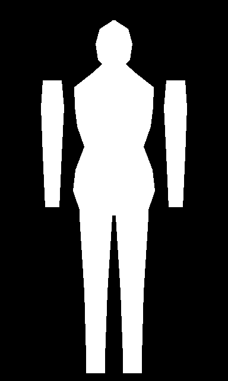
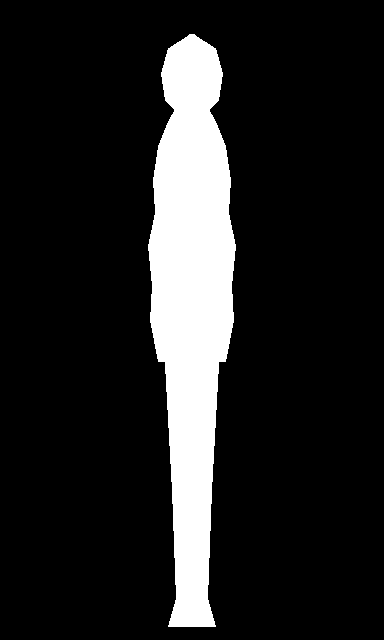
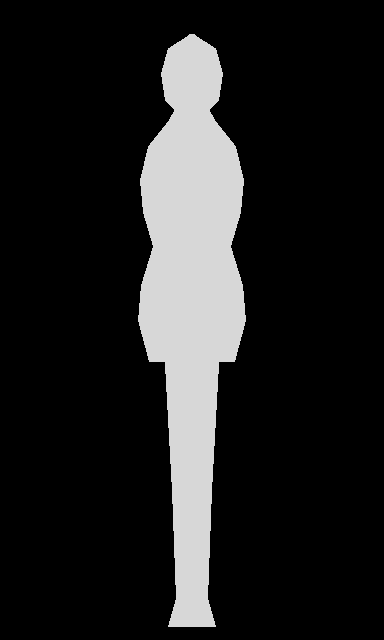
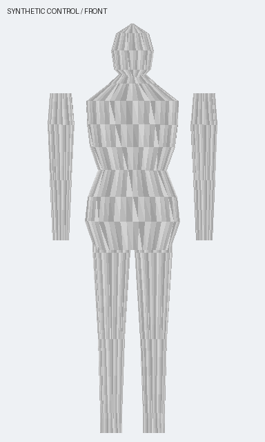
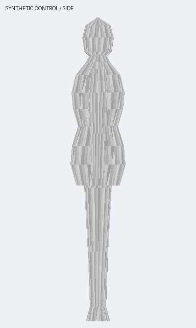
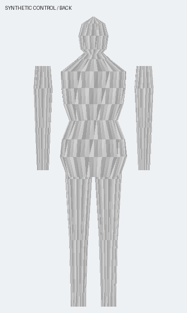

Height fixed at 170 cm; camera frozen. Both final silhouettes match the supplied masks exactly at 384 × 640. Generated geometry is a synthetic proxy; the back is inferred, not observed.
Evidence and uncertainty report · Metrics · Independent checks · OBJ · Parameters · Reproduce







Overlay: gray overlap; cyan target-only; pink candidate-only. No colored mismatches remain in the final fit. Initial front IoU 0.952754 → 1.000000; initial side IoU 0.888754 → 1.000000.